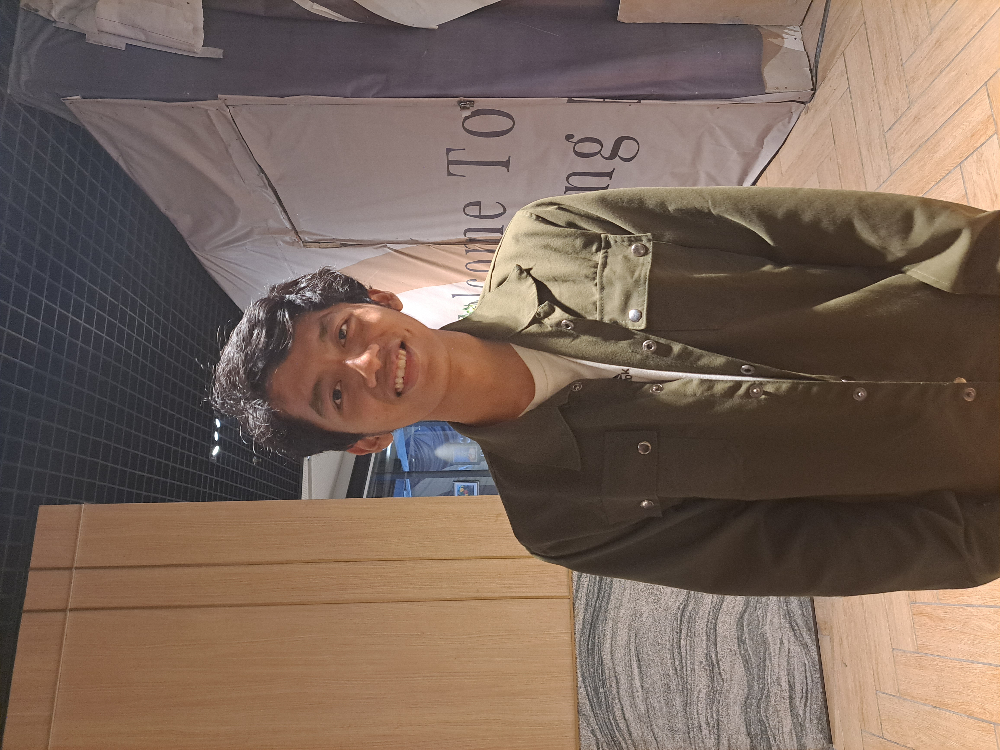

My Resume

Summary
Mahasiswa Teknik Fisika Angkatan 2021
Education
- SD Negeri Cendekia: 2005-2001
- Menyelesaikan pendidikan dasar dengan prestasi akademik yang baik.
- SMP Swasta Harapan: 2011-2014
- Melanjutkan pendidikan menengah pertama dengan fokus pada mata pelajaran umum.
- SMA Negeri Unggul: 2014-2017
- Menyelesaikan pendidikan menengah atas dengan mengejar program ilmu pengetahuan alam.
- Mengikuti berbagia kegiatan ekstrakulikuler:
- Anggota klub bahsa Inggris dan berpartisipasi dalam kompetisi debat tingkat daerah.
- Bergabung dengan tim bola basket sekolah dan mengikuti turnamen antar sekolah.
- Mencapai hasil akademik yang memuaskan dan lulus ujian nasional
Work Experience
- Perusahaan ABC: 2018-2020
- Jabatan: Asisten Pemasaran
- Tanggung jawab: Mendukung tim pemasaran dalam kegiatan riset pasar, penulisan konten, dan pengelolaan media sosial. Membantu dalam perencanaan dan pelaksanaan kampanye pemasaran. Melakukan analisis data untuk mengidentifikasi tren dan peluang pemasaran.
- Perusahaan XYZ: 2020-2021
- Jabatan: Koordinator Proyek
- Tanggung Jawab: Mengelola proyek-proyek klien dari awal hingga akhir, mengkoordinasikan tim internal dan eksternal, serta memastikan kelancaran pelaksanaan proyek sesuai dengan tenggat waktu dan anggaran yang ditetapkan. Bertanggung jawab atas pemantauan progres proyek dan melaporkan kemajuan kepada manajemen.
- Perusahaan PQR: 2021-sekarang
- Jabatan: Spesialis Sumber Daya Manusia
- Tanggung Jawab: Menangani rekruitmen dan seleksi karyawan baru, mengelola administrasi SDM, menyusun dan mengimplementasikan kebijakan dan prosedur SDM. Memberikan dukungan dalam pengembangan karyawan, manajemen kinerja, dan hubungan industrial.
Skills
- Bahasa Inggris
- Ms Office
- Tim Management
- Presentasi
- Riset
- Problem Solving